青い天使と市川発のイタリアン。その行方は...
どうも。零阪麻琴です。
本心としてはプログラミング関係のことを描きたいわけです。が。
昨日こそは社会的なことがどうしても気になってしまいましてどうしようもなくなってしまったのでありまして...
そして、今日こそはプログラミングに近づいていこうということで、こいつ。
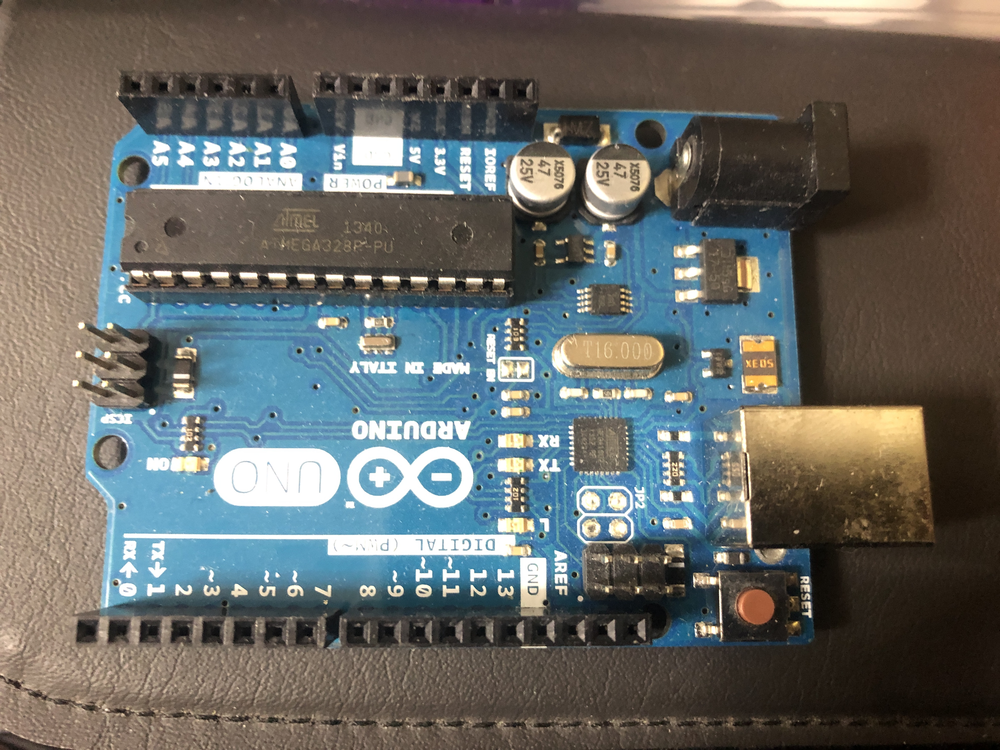
こいつこそいれば大丈夫、一蓮托生の権化、青い天使、ハイスペック電源、イタリア領シリコンことArduinoです。
ってなわけでこいつで今日はこいつを使いつつこれをいじります。

先に謝っときます。本当はこいつじゃないんです。同じ種類だから載せてるだけで。
大昔のVAIOから抜き取ったスピーカーです。今回使ったのはRチャンネルですが、こっからの解説はLチャンネルのやつでやります。
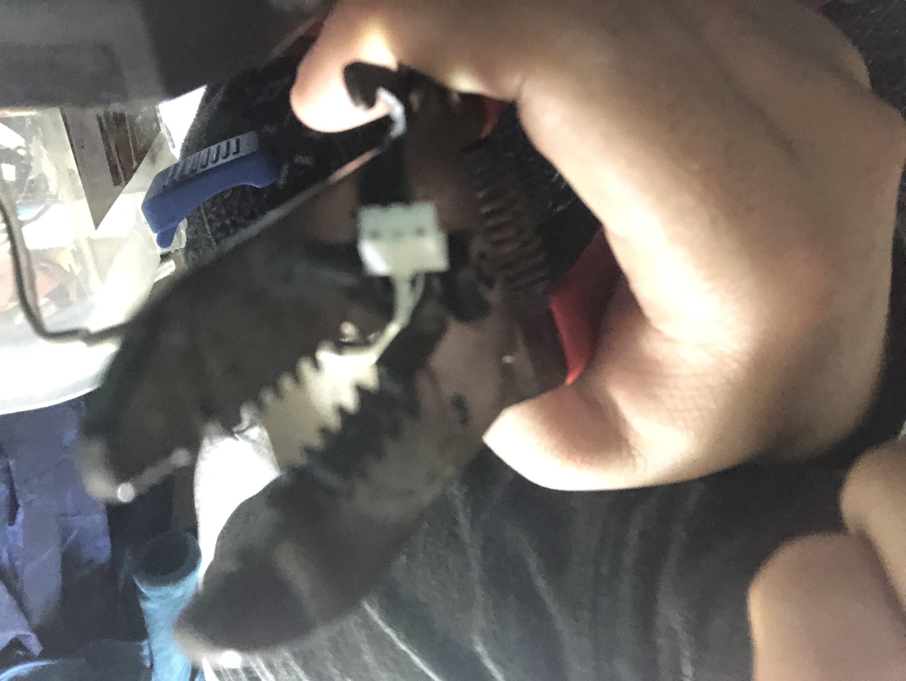
まず、こうやって先っぽを切り落とします。
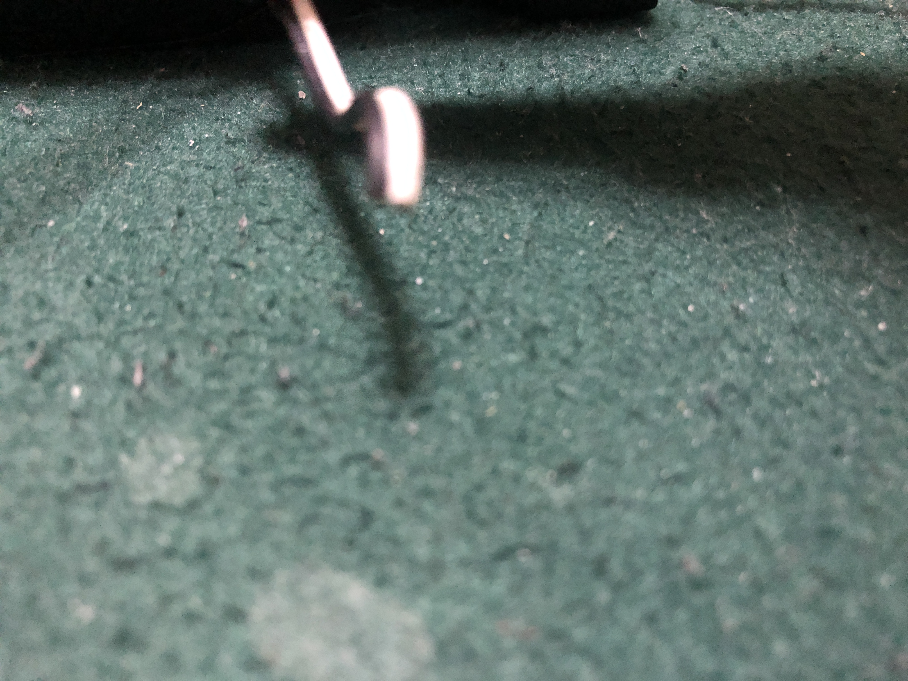
こいつが出来るはずです。そしたら...
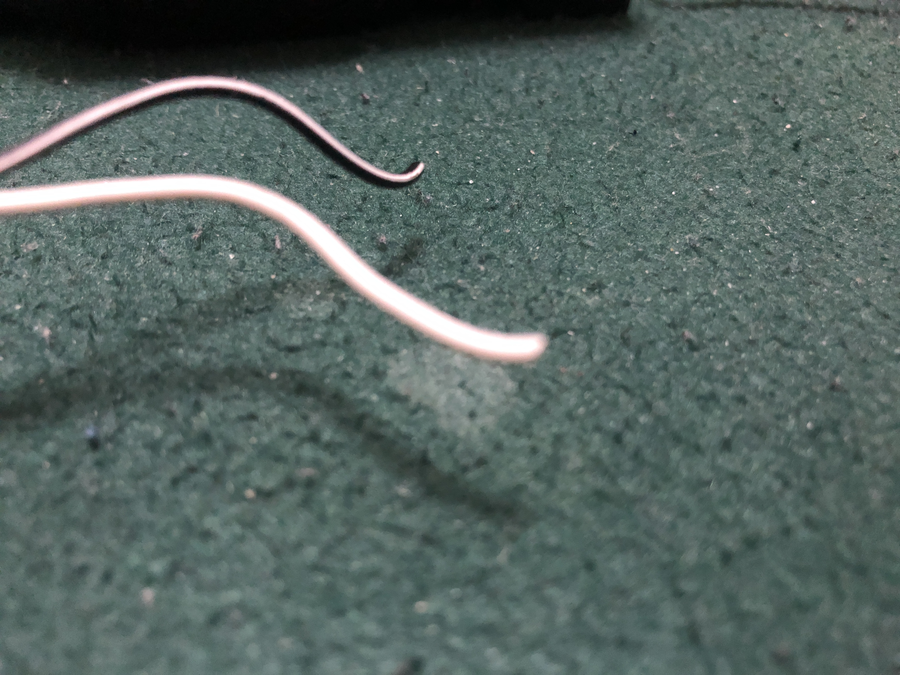
こうやって２つに分けて、ストリッパーで...
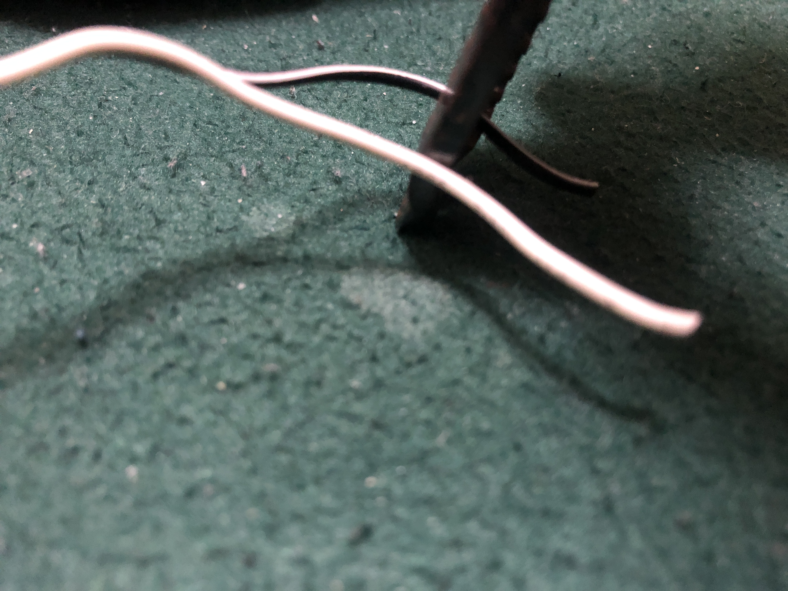
こうして、
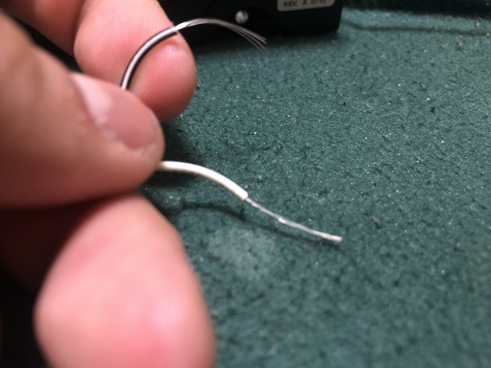
線の被覆を剥きます。1.5cmくらいでいいかな。そしたら...
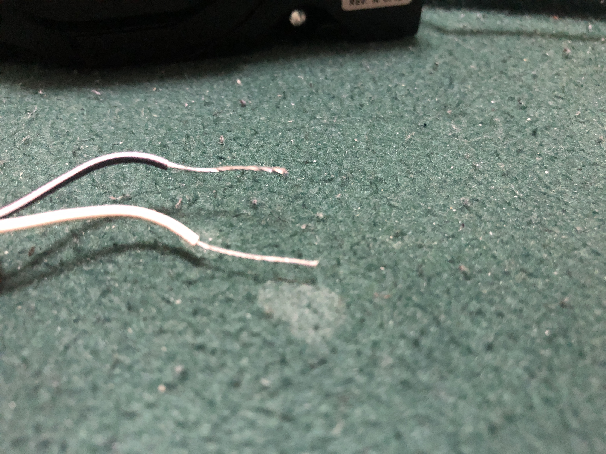
こうやってねじります。これやっとけば線がバラバラになったりせずにすみます。
そして、ブレッドボードのネジみたいなやつに接続すればおｋ．
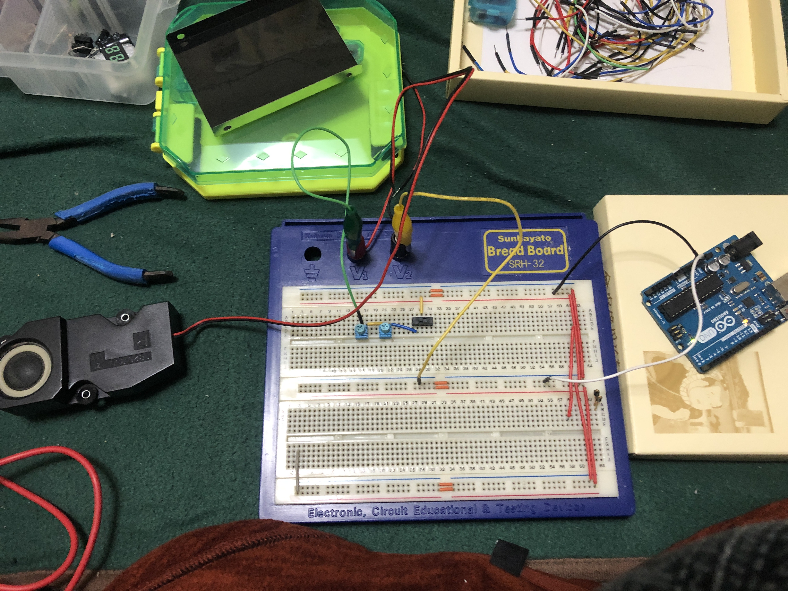
まず最初に作ったのはこの回路。専ら動作確認用です。
スイッチのオンオフでちゃんとプツプツ言ってくれたので次。
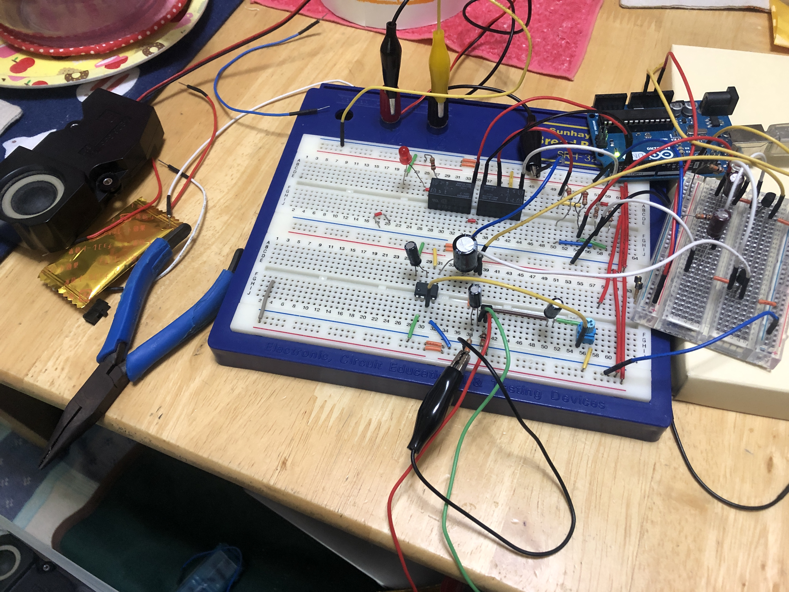
一気に難しくすんなと言われればそのとおりです。
過程の写真を取りそびれてます。
最初は発振器だけだったんです。そして、見様見真似で回路組んでたら、なんかオペアンプ、発振器の抵抗を選択するリレー...
って感じでどんどん回路が複雑化してってこうなりました。
ちなみに、今回のプログラミング要素ですが...
このリレーを制御しているのがArduinoのデジタル制御ピン
うーむ...地味だ...ってなわけで今回がこれだと寂しいのでその後食べに行ったサイゼリヤの料理でも乗っけます。
気がついたらあそこ現金専用になってたんですね。
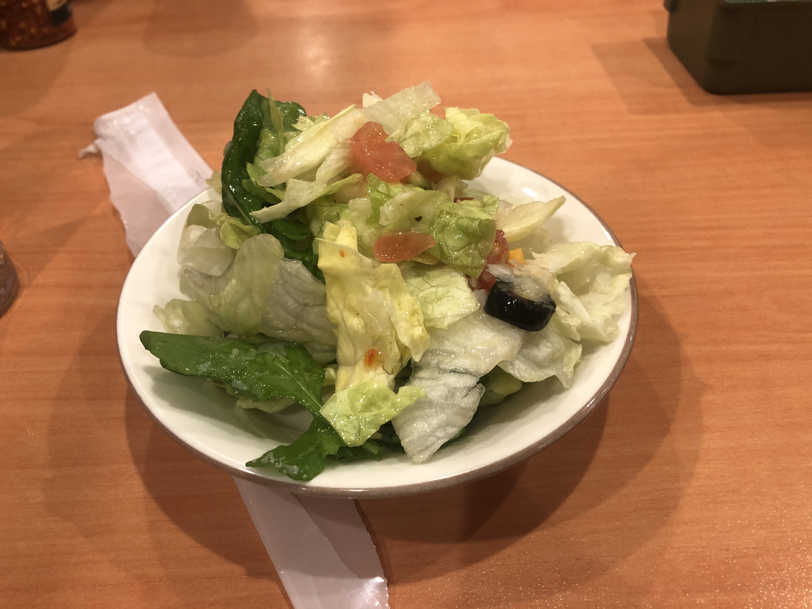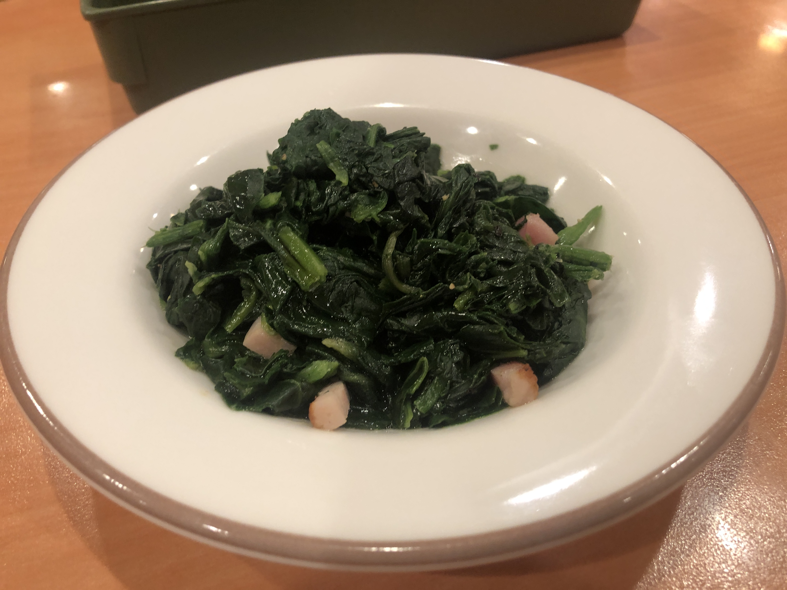
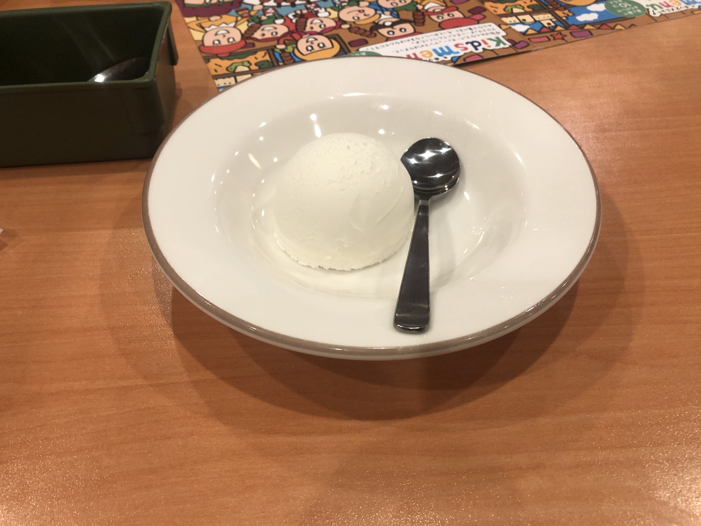
以上です。広めてくれると喜びます。ぜひかなり下にある青くて美しいボタンから。
おまけ
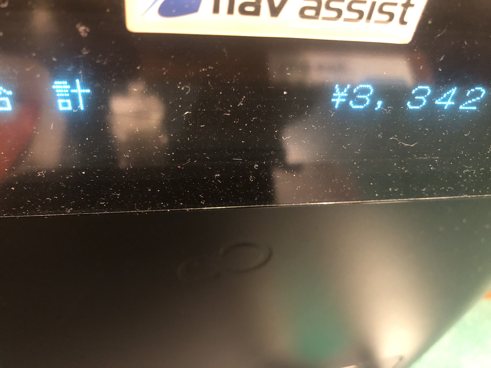
Tweet
記事一覧に戻る
Consoles